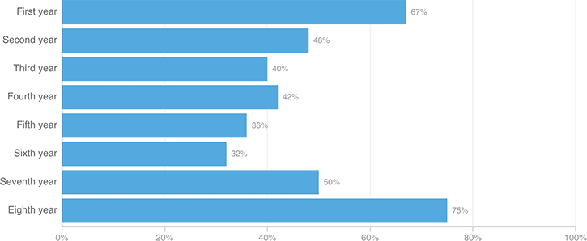

‘Do You Spend Over 60 Hours Per Week In The Hospital?’
On average, 47% of residents surveyed said they spend more than 60 hours per week at their hospital. Results, grouped by the time since respondents’ graduation from medical school:
